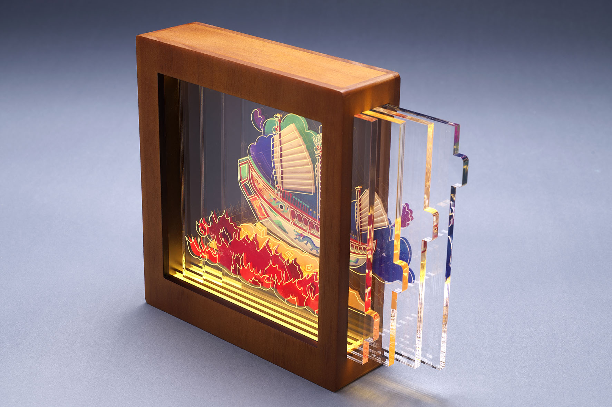
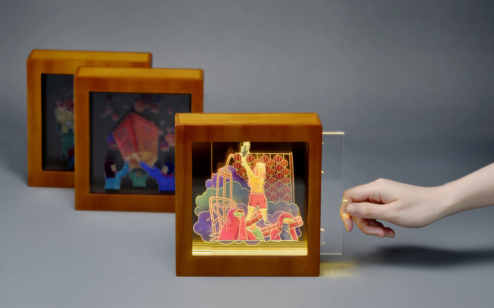
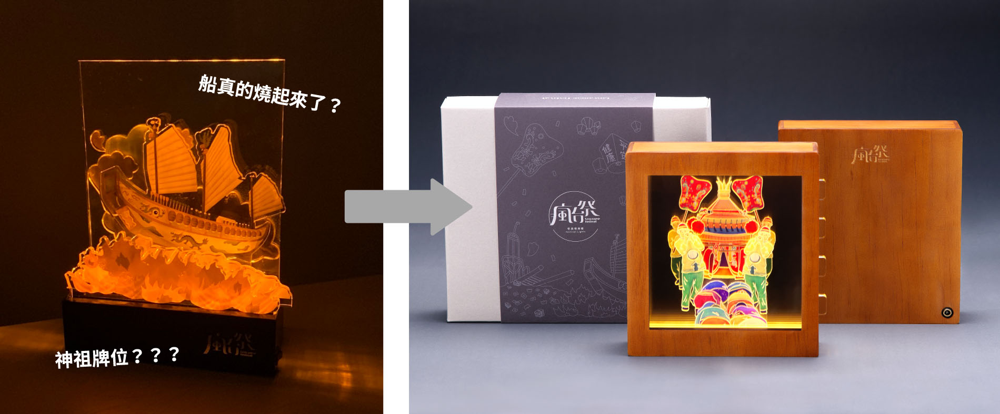
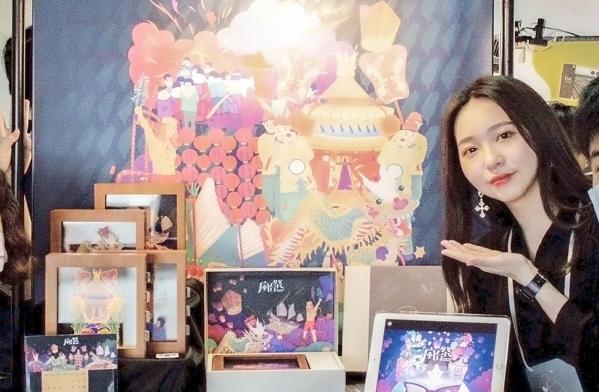

瘋台祭Taiwanese Festival
Portfolio
專案背景
瘋台祭致力於「推廣台灣祭典文化」，由台灣交通部觀光局統計，選出最具代表性的六個台灣祭典，透過具有文化意象的插畫，搭配豐富色彩，結合現代媒材，將平面插圖分層，從平面的插圖，做成立體的燈箱，讓傳統祭典文化普及到生活中。除此之外，透過印刷物的應用，增加文化的傳遞效果，讓收到或收藏這份禮物的人，除了對本土祭典有更深的認同感，更讓外國人對台灣傳統有新的認識。

問題與動機
發現台灣人的本土認同感薄弱、在地文化的不熟悉等問題，要如何使人完整性的吸收相關文化、讓外國人認識更道地的台灣文化正是我們想解決的。我們鎖定的主要客群涵蓋國內外觀光客、工藝品收藏家及在地文化愛好者。
插畫與壓克力
根據參考素材與祭典相片繪製線稿，並賦予飽和的色彩，將每幅畫拆分四層，透過雷切的矩形把手拉出，可以觀察到祭典層次間的完整樣貌，擺脫以往平面設計2D所看不到的細節，也因為多層的使用讓燈箱在發亮時有無限延伸的空間感。 共繪製6款祭典插畫分別是：平溪天燈、苗栗旁龍、大甲媽祖遶境、鹽水蜂炮、東港燒王船、炮炸邯鄲爺，主要以暖色系木盒代表傳統，多層通透壓克力代表創新，傳達新的文化概念。
禮盒包裝
包裝使用禮盒上下蓋的設計，外盒設計選用灰卡紙，封套中央燙銀的LOGO配上線稿插畫，營造外盒內斂且精緻的形象，打開包裝後可見到上蓋內裡是充滿色彩的插畫，與附上祭典說明卡的木色燈箱，讓內外的反差營造開箱驚喜感；祭典小卡正面是平面插畫，使用者可依據插畫配置壓克力，而背面則是該祭典的故事由來；內盒左側設計一個圓形孔洞方便使用者抽取，內有燈箱說明書、變壓插座以及遙控器。
獲得獎項
Red Dot Winner - Illustrations
Red Dot Winner - Publishing & Print Media
A+文資創意季 工業設計類銅獎
中華設計獎入圍
製作過程
做了一年多的作品，過程中遇到的了無數的問題，及需要溝通的地方，尤其是在燈箱的部分調整了非常多次，第一版的時候我們做出了一個有點像神祖牌位的東西，因為底座厚重又加上打了橘黃光，一整個神氣很重XD，因此後期我們調整變成全框式，燈光改成暖白光。 雖然很可惜因為疫情的關係展覽的機會都被取消，但最終也很榮幸地得到了兩項紅點，插畫設計、品牌與傳達設計，也參與了台中的A+文資創意季展覽，獲得工業設計類銅獎，以及入圍中華設計獎，這些給予我們極大的信心和成就感。
